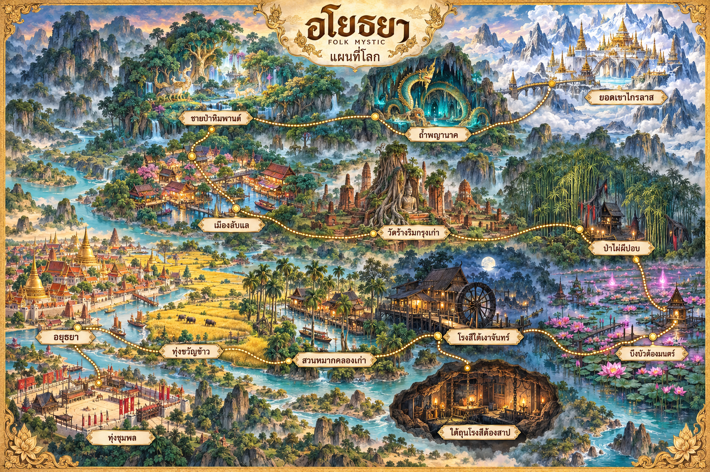

เส้นทางหลัก
ทั้ง 6 ฉากตั้งแต่ป่าไผ่ผีปอบถึงยอดเขาไกรลาสเปิดให้สำรวจแล้ว มอนสเตอร์และเควสบทใหม่ยังไม่เปิด
ทุ่งชุมพลเข้าได้ผ่านหน้ากิลด์หรือขุนพลชุมพลเมื่อเป็นสมาชิกกิลด์ ใต้ถุนโรงสีต้องสาปเป็นดันเจี้ยนปาร์ตี้ เข้าจากโรงสีใต้เงาจันทร์

ทั้ง 6 ฉากตั้งแต่ป่าไผ่ผีปอบถึงยอดเขาไกรลาสเปิดให้สำรวจแล้ว มอนสเตอร์และเควสบทใหม่ยังไม่เปิด
ทุ่งชุมพลเข้าได้ผ่านหน้ากิลด์หรือขุนพลชุมพลเมื่อเป็นสมาชิกกิลด์ ใต้ถุนโรงสีต้องสาปเป็นดันเจี้ยนปาร์ตี้ เข้าจากโรงสีใต้เงาจันทร์